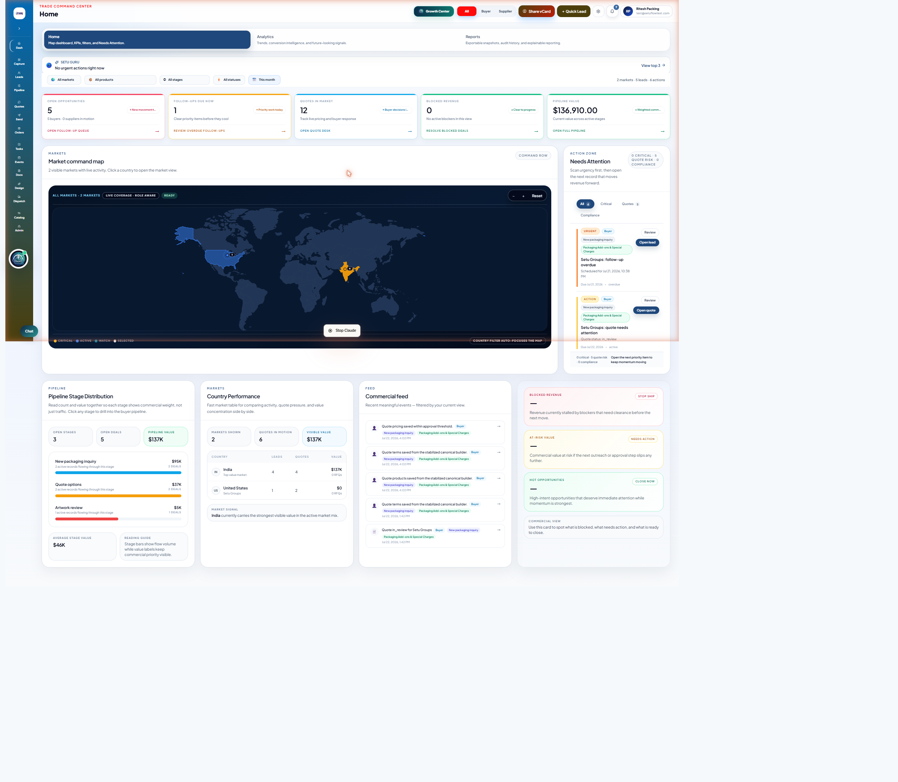
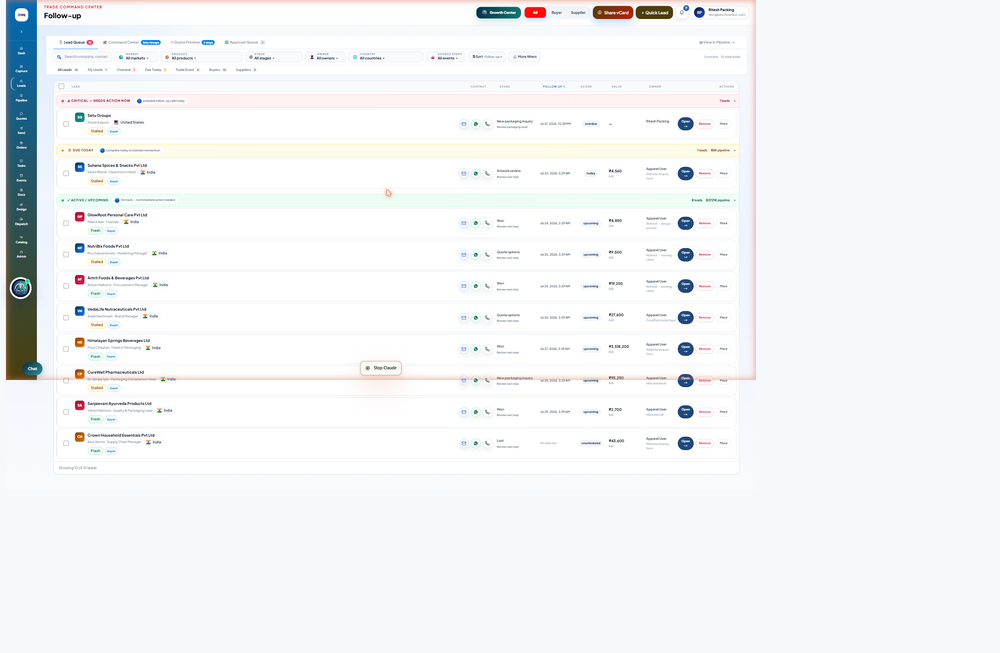
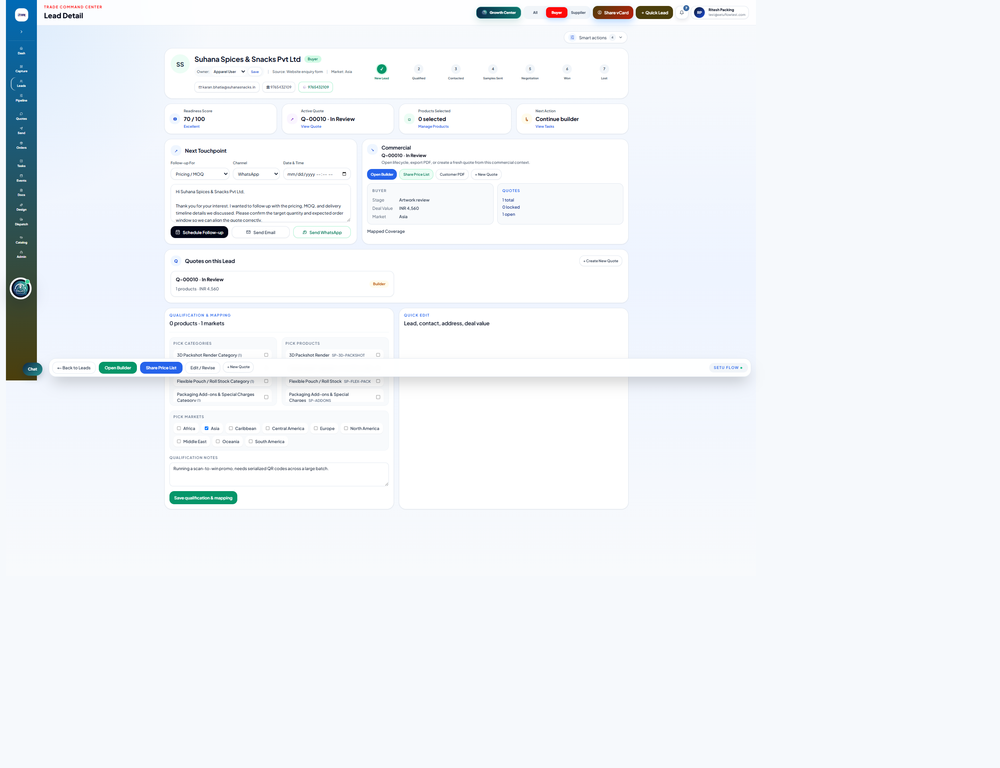
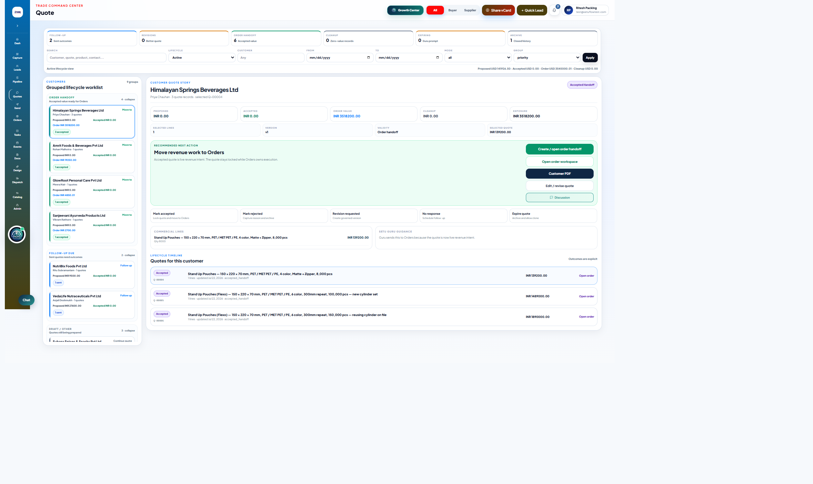

Retest 1 update — July 23, 2026
A full end-to-end order journey (capture → qualify → quote → design → approval → order) was retested on July 23. PKG-JOURNEY-001 through 007 are all confirmed fixed and hold up under refresh/reload. The retest also found a new P0 — a quote gets permanently stuck after one approval cycle, blocking Send/Accept/Order (PKG-JOURNEY-009) — plus 7 smaller gaps (PKG-JOURNEY-010–016). Full detail is in gap-register.md and test-records.md, which are more current than the step-by-step guide below (not yet re-synced into this HTML). See those files for the complete Retest 1 write-up.
Executive Summary
A live, click-only walkthrough of the Packaging workspace, testing the real new-user journey from login through quote-to-order. This is discovery only — no fixes, commits, deployments, or database changes were made. Testing this session covered the core Lead → Quote entry path in depth and found a root-cause chain that blocks it entirely for new leads; several other journeys were reached and passed cleanly; the remaining sidebar workspaces were not yet reached (see Missing Journey States).
Temporary test records created
One lead — GUIDE TEST Packaging Buyer (id 0425d474-3f10-4cd5-a15a-0ce03da67cef) — created via Quick Add Lead in the live Stark Packmate org, per the specified test-data convention. No quotes, orders, messages, or notifications were created or sent. Full detail in test-records.md; flagged for cleanup.
Headline finding
A brand-new lead currently cannot be walked through to a quote using on-screen actions alone. Root cause: the "Pick Categories" checkboxes on Lead Detail don't register clicks or persist a selection, which means a new lead never gets product interest mapped — which in turn silently blocks quote creation with an error that's generated but never shown anywhere in the UI (it only exists in the page URL). See Gap Register, PKG-JOURNEY-007.
Journey Coverage Map
Status reflects what was verifiable through live clicks this session.
*Lead Detail itself passed — reached via a working alternate path (Pipeline kanban card) after the direct Leads Queue path was found blocked. See Journey 5 & 6 below.
Click-by-Click Guide
Each journey below is expandable. Journeys reached this session have full step detail with expected-vs-actual comparisons and related gaps; journeys not yet reached are marked accordingly rather than guessed at.
Login and First-Time Entry
Starting screen: Browser navigated to packaging.setuflowcrm.com with an existing authenticated session.
/dashboard (Home), fully authenticated as Ritesh Packing (test@setuflowtest.com). Workspace branding, "TRADE COMMAND CENTER" header, org identity, global nav (Growth Center, All/Buyer/Supplier, Share vCard, Quick Lead, notifications, user menu) and Setu Guru entry point all rendered correctly on first load.Full login-form flow (credentials entry) was not exercised since the session was already authenticated — worth a separate pass logged out.
Home Dashboard
Click: Home is the default landing tab; content confirmed by reading the live page.

Cross-checking dashboard numbers against underlying records (e.g., does "12 Quotes in Market" match the Quotes page count) was not fully reconciled this session — worth a dedicated pass.
Analytics and Reports
Not reached this session. The "Analytics" and "Reports" tabs are visible and clickable from the Home page header (confirmed present in live page text alongside "Home"), but were not clicked through.
Quick Add Lead
Click: + Quick Lead in the global header (resolves to /leads?quickLead=1).

Entered: Company name GUIDE TEST Packaging Buyer, Country India, Contact Journey Test User, Email journey-test@example.com, Lead source Trade show, Event/source label "User Journey Discovery", Trade note per spec. Left phone/WhatsApp/job title/deal value blank (optional).
Click: Save lead.
Leads and Follow-Up Workspace
Click: "Leads" in the sidebar (also the default view landed on after Quick Add Lead saves).

Click: "Open →" on the "GUIDE TEST Packaging Buyer" row.
/leads. Retried; same result. Tried the company-name link on the same row — also nothing. Retested against a real, pre-existing lead ("Suhana Spices & Snacks Pvt Ltd") — same dead result. Checked browser console (no errors) and network activity (no request fired at all) to rule out a slow/silent failure — confirmed truly inert.Click: "Pipeline" in the sidebar (an alternate route to leads, in scope for this journey).
/leads/{id}?mode=buyers).Lead Detail and Qualification
Reached via: Pipeline kanban card click (see Journey 5, Step 3).

Click: A checkbox under "Pick Categories" in Qualification & Mapping (e.g. "Digital Label Production Category").
.checked read immediately after — always false. "0 products" count never moved.Click: Edited Qualification Notes text → "Save qualification & mapping" → refreshed the page (persistence test).
The Trade Note entered in Quick Add Lead is automatically carried over into the Qualification Notes field on Lead Detail — a genuinely good bit of continuity between the two forms, worth keeping.
Packaging Catalog
Click: "Catalog" in the sidebar.
Click: "View details →" on Digital Labels.
Quote Creation
Click: "+ New Quote" (Commercial section) on the test lead's Lead Detail page.
/leads/{id}/quote?quoteDraftError=Lead%20needs%20at%20least%20one%20active%20product%20interest%20before%20creating%20a%20quote. The 5-step shell renders (Product / Terms / Pricing / Review / Send Gate labels all visible) with a "Create Quote Draft" button — but the error message is only present in the URL, never rendered anywhere on the page. A user sees a normal-looking screen with no indication anything is blocking them.Click: "Create Quote Draft" (attempting to proceed anyway).
This entire journey is blocked by PKG-JOURNEY-003 — because category checkboxes on Lead Detail never actually save a selection, no new lead can ever satisfy "at least one active product interest," so Quote Builder is unreachable for any brand-new lead via the UI.
⛔ PKG-JOURNEY-007 — new-lead-to-quote path fully blocked (P0)Steps 2–5 of the builder (Terms, Pricing, Review, Send Gate) were not reachable this session as a result and are logged under Missing Journey States.
Quote Lifecycle
Click: "Quotes" in the sidebar.

Click: "Himalayan Springs Beverages Ltd" in the grouped worklist.
Per the discovery guardrails, no lifecycle-changing buttons (Mark accepted/rejected, Create/Open Order Handoff, etc.) were clicked on this real customer quote — viewing only.
Customer PDF and Documents
Checked: The "Customer PDF" button on the Himalayan Springs quote story is a real link (<a target="_blank">) pointing to /api/quotes/{id}/pdf, confirming it's built to open in a new tab rather than replace the CRM page.
200 OK with Content-Type: application/pdf — the PDF genuinely generates. Visual verification of the rendered PDF (branding, totals, page breaks, print/download) was interrupted mid-click by a browser-automation tooling issue (the tab group reset) and not yet completed.Recommend a short follow-up pass: click the button directly (not via injected script), confirm the new tab, and visually check branding/totals/page breaks per the original checklist.
Order Handoff and Orders
The "Create / open order handoff" and "Open order workspace" actions were visible and available on the Himalayan Springs quote story (see Journey 9 screenshot) but not clicked, to avoid altering a real accepted customer quote's execution state without a safe test quote to use instead (the test lead's quote creation was itself blocked — see Journey 8). Recommend testing this with a dedicated safe test quote once Journey 8 is unblocked.
Remaining Sidebar Workspaces
Send, Orders, Tasks, Events, Docs, Design, Dispatch, and Admin were all visible and present in the sidebar throughout this session (confirmed in every page's nav) but not individually clicked through. Given the depth of investigation the Lead → Quote path required (multiple repro attempts per gap, network/console verification), this was not reached this session. Full list logged under Missing Journey States below.
Gap Register
Same data as gap-register.md, filterable here. All 8 gaps found this session — no fixes applied.
| ID | Severity | Workflow | Summary | Type | Repro |
|---|
Missing Journey States
What wasn't captured this session, and why — so the next pass knows exactly where to pick up.
- Quote Builder steps 2–5 (Terms, Pricing, Review, Send Gate) — unreachable because step 1 is blocked for any new lead (PKG-JOURNEY-007).
- Order Handoff creation and Orders workspace — deliberately not exercised against a real accepted quote (guardrail); no safe test quote was available since quote creation is blocked.
- Customer PDF visual output — endpoint confirmed working (200, application/pdf) via direct request; new-tab click behavior, branding/totals/page-break visual check, and download/print were interrupted by a browser-automation tooling issue (tab group reset mid-session) before completion.
- Send, Orders, Tasks, Events, Docs, Design, Dispatch, Admin sidebar workspaces — not yet clicked into. All confirmed present and visible in the sidebar throughout the session.
- Analytics and Reports tabs — visible on the Home page header, not clicked through.
- Growth Center, Share vCard, notifications panel, Setu Guru chat — visible in global header/footer throughout, not individually tested.
- Smart Scan / camera capture / file upload in Quick Add Lead — visible in the drawer, not exercised (manual entry was used instead).
- Duplicate-lead detection — not tested; the test lead used a clearly unique company name.
- Full login flow (credentials entry from a logged-out state) — session was already authenticated.
- Responsive / mobile layouts — all testing this session was on desktop viewport.
- Dashboard-to-record number reconciliation — Home dashboard KPIs were read but not cross-checked line-by-line against Quotes/Leads page totals.
Recommended Fix Sequence
Grouped by category per the discovery brief. Nothing here has been implemented — recommendation only.
1 · Production blockers
2 · Core workflow defects
3 · Data and calculation defects
4 · Navigation and state defects
5 · PDF and document defects
6 · New-user usability defects
7 · Visual polish
Retest Checklist
Reusable once fixes for the above land. Check off during the next pass.
- Lead Queue: "Open →" and company-name link navigate to Lead Detail from every lifecycle group (Critical, Due Today, Active/Upcoming).
- Lead Detail: clicking a Pick Categories checkbox visibly checks it and updates the products-selected count.
- Lead Detail: Save qualification & mapping persists both category selections and notes text after a hard refresh.
- A brand-new lead, taken only through on-screen actions (Quick Add Lead → qualify → + New Quote), successfully opens the Quote Builder with no error.
- If quote creation is still blocked for any reason, the blocking reason is rendered visibly on the page — not only in the URL.
- "Create Quote Draft" gives visible feedback on both success and failure.
- Pipeline either becomes a real navigable page (URL updates) or this is confirmed as the intended design.
- Quick Add Lead shows a clear success confirmation before/as the drawer closes.
- Customer PDF opens in a new tab, correctly branded and totaled, without disturbing the CRM tab's state.
- Full Quote Builder walkthrough (Product → Terms → Pricing → Review → Send Gate) completed end-to-end on a test quote.
- Order Handoff creation tested on a safe test quote.
- Remaining sidebar workspaces (Send, Orders, Tasks, Events, Docs, Design, Dispatch, Admin) each clicked into at least once.